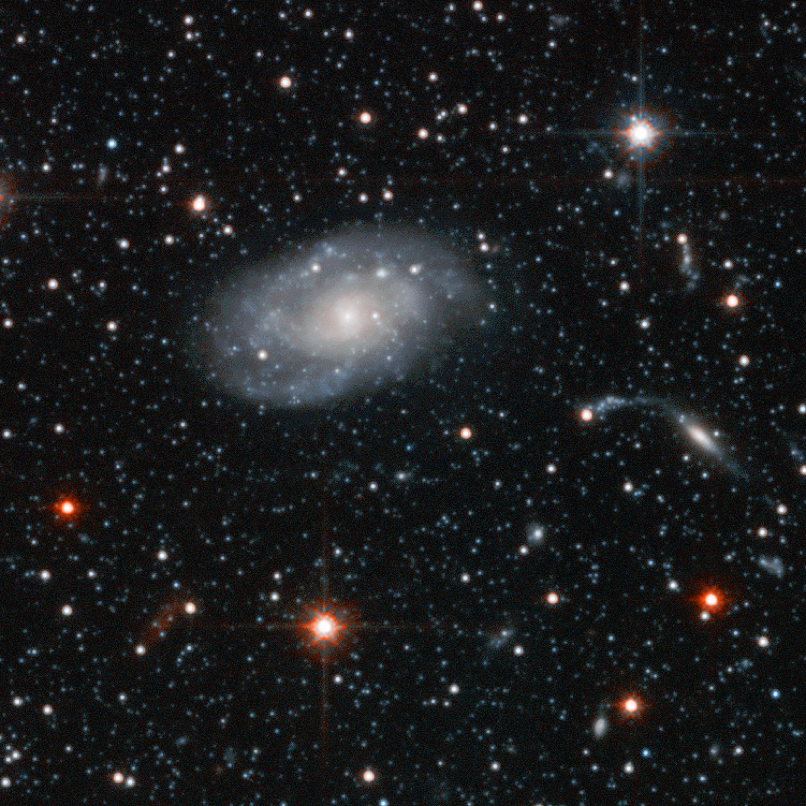
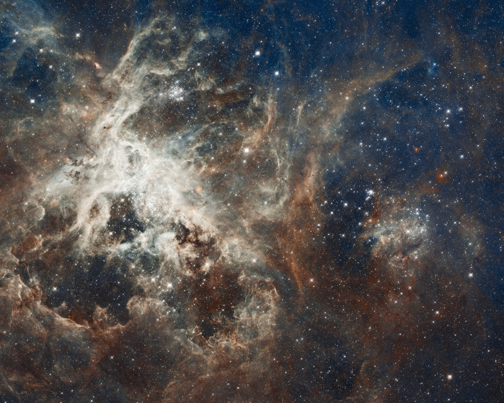
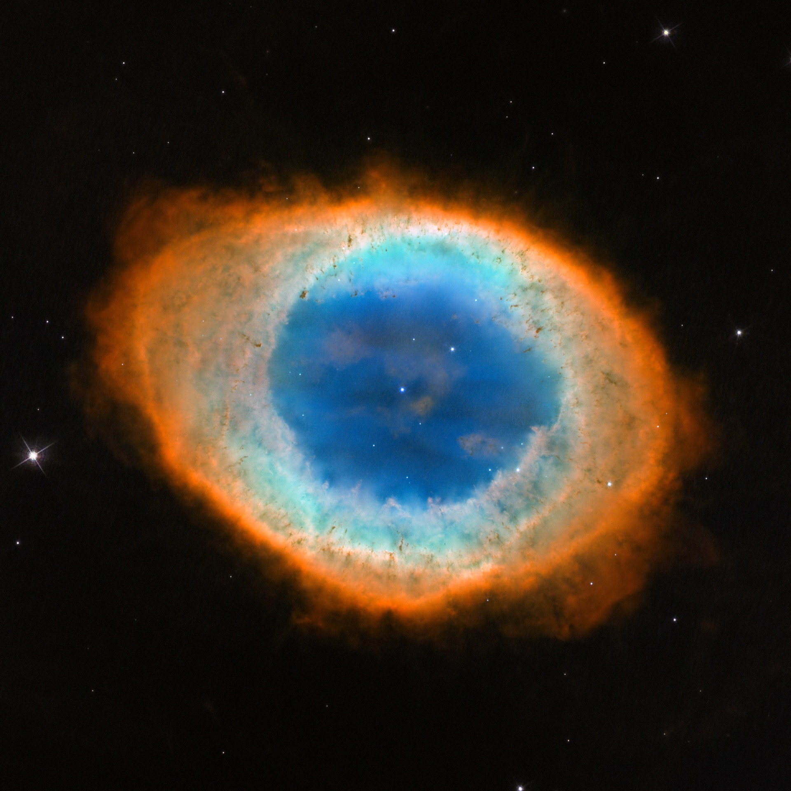

Magnetic Accretion & Eruptions

Long-duration simulations show how accumulated magnetic flux drives eruptions, winds, vertical angular-momentum transport, and rapid variability.
My black-hole research asks how magnetic fields control accretion, tap rotational energy, and organize relativistic outflows—and how those processes reveal themselves through images, polarization, spectra, and rapid variability.

Long-duration simulations show how accumulated magnetic flux drives eruptions, winds, vertical angular-momentum transport, and rapid variability.

Misaligned-disk and large-scale jet simulations connect horizon-threading flux to power, intermittency, collimation, and limb-brightened structure.

BHOSS and GRMONTY connect GRMHD models to spectra, light curves, polarized images, and EHT-scale observables.
Turbulence builds magnetic flux near the horizon; the field can arrest inflow, erupt, realign a tilted disk, or power an intermittent jet. My simulations have quantified these processes and connected them to flares, changing images, and X-ray-binary accretion states.
The same simulation can be interrogated at several physical and observational scales.